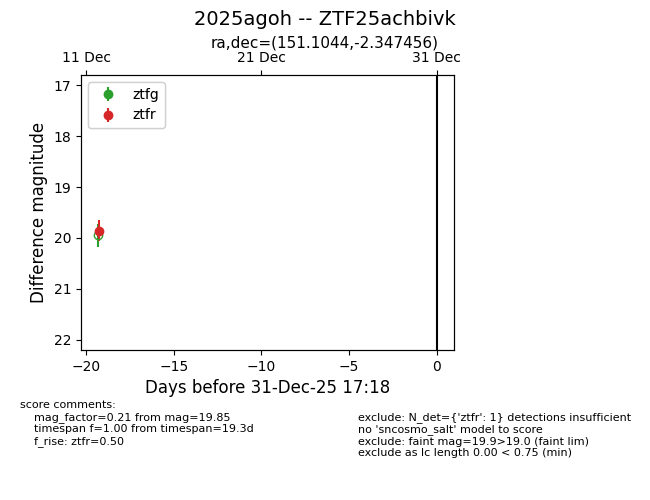
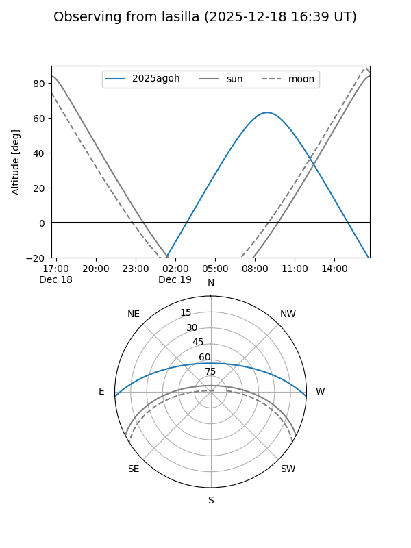
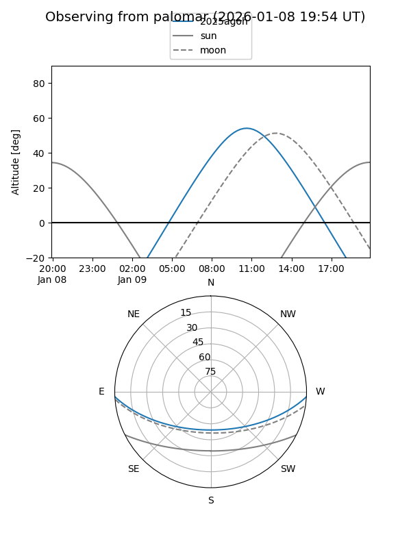

2025agoh
Target 2025agoh at 2025-12-31 16:59
Aliases and brokers:
FINK:
Lasair:
ALeRCE:
TNS:
YSE:
alt names
ZTF25achbivk (ztf,fink_ztf)
2025agoh (tns,yse)
Coordinates:
equatorial (ra, dec) = 151.1044,-2.34746
equatorial (HMS+DMS) = 10:04:25.06,-02:20:50.84
galactic (l, b) = (242.4236,+40.14287)
Flags:
Photometry:
last ztfr=19.85
1 ztfr detections
Lightcurve

Visibility


Additional plots